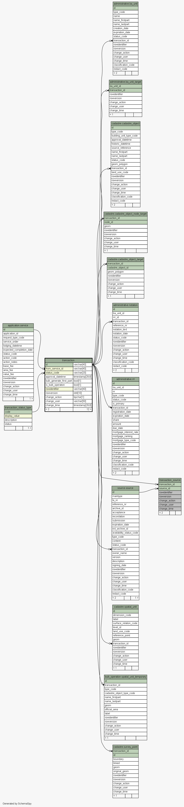
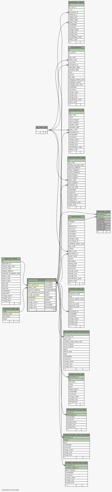

| Table sola.transaction.transaction Transactions are used to group changes to registered data (i.e. Property, RRR and Parcels). Each service initiates a transaction that is then recorded against any data edits made by the user. When the service is complete and the application approved, the data associated with the transction can be approved/registered as well. If the user chooses to reject their changes prior to approval, the transaction can be used to determine which data edits need to be removed from the system without affecting the currently registered data. Tags: FLOSS SOLA Extension, Change History
|
Generated by SchemaSpy |
| ||||||||||||||||||||||||||||||||||||||||||||||||||||||||||||||||||||||||||||||||||||||||||||||||||||||||||||||||||||||||||||||||||||||||
Analyzed at Tue May 31 09:59 NZST 2016 | ||||||||||||||||||||||||||||||||||||||||||||||||||||||||||||||||||||||||||||||||||||||||||||||||||||||||||||||||||||||||||||||||||||||||
Indexes:
| Column(s) | Type | Sort | Constraint Name | Anomalies |
|---|---|---|---|---|
| id | Primary key | Asc | transaction_pkey | |
| from_service_id | Performance | Asc | transaction_from_service_id_fk6_ind | |
| from_service_id | Must be unique | Asc | transaction_from_service_id_unique | This unique column is also nullable |
| rowidentifier | Performance | Asc | transaction_index_on_rowidentifier | |
| status_code | Performance | Asc | transaction_status_code_fk27_ind |
|
  |
Excluded from diagram's relationships: transaction_source.change_action transaction_source.rowidentifier transaction_source.rowversion transaction_source.change_user transaction_source.change_time